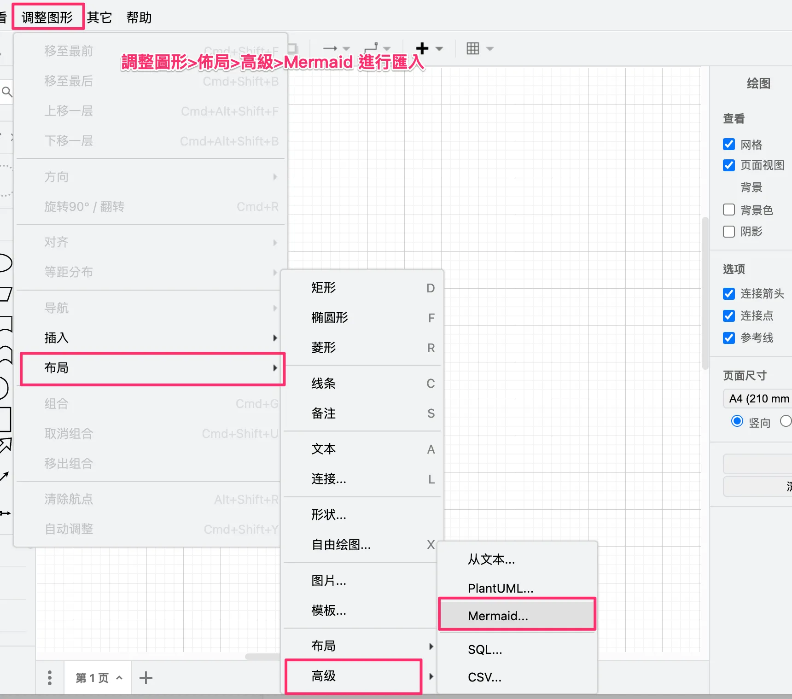
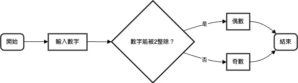

Python 基礎課程0-什麼是程式, 什麼是演算法, 什麼是流程圖
在程式語言中，低階語言靠近硬體，如機器碼。高階語言抽象程度高，易用但效率稍低。演算法是一連串指令解決問題，需有效、有限、明確。流程圖視覺化演算法步驟，圓形開始結束、矩形步驟、菱形決策，箭頭指流程方向。學會畫流程圖，用AI或[Draw.io](http://draw.io/)。【70字】
這堂課你要學會-
解釋什麼是低階語言、什麼是高階語言？
什麼是演算法？演算法中的有效、有限、明確代表什麼意思？
什麼是流程圖，並會畫流程圖
低階語言 vs 高階語言
在程式語言的世界裡，我們通常將語言分為低階語言（Low-Level Language）和高階語言（High-Level Language）。這兩者之間的主要差別並不是誰比較優越，而是在於語言的抽象層次和接近硬體的程度。
低階語言
低階語言是接近計算機硬體的語言，通常與特定的計算機架構密切相關。它們主要包括機器語言（Machine Language）和組合語言（Assembly Language）。這些語言的特點是：
效率高：低階語言允許程式直接與硬體互動，對記憶體、處理器等資源進行操作，相較速度更快。
可攜性低：也因為程式直接與硬體互動，換平台時，容易因架構不同，如x86架構(Intel, AMD)、ARM架構(Apple, Samsung…)， 而需要重寫或改寫程式。
維護性低：程式碼不易閱讀導致在維護時較為不易。
以下是一個簡單的機器語言範例，展示如何用二進制（0和1）表示一個簡單的指令：
1 | |
以下是一個簡單的組合語言示例，展示如何將兩個數字相加：
1 | |
高階語言
高階語言則是抽象程度較高的語言，這些語言遠離硬體層面，更接近人類語言。常見的高階語言包括Python、Java、C++等。其特點包括：
易用但效率相對較低：高階語言提供了許多抽象方法，讓開發者可以專注於解決問題本身，而不必關心底層硬體的細節。
可攜性高：高階語言通常與特定的硬體架構無關，程式可以在不同的平台上運行。
維護性高：由於語言結構更接近人類語言，高階語言相對容易學習，程式碼也更容易理解和維護。
以下是一個簡單的高階語言(Python)示例，展示了如何將兩個數字相加：
1 | |
演算法是什麼？
演算法是一連串明確定義的指令，用來完成特定任務或解決特定問題。無論是在程式設計中，還是在日常生活中，我們都無時無刻不在使用演算法。
以下以日常洗衣服為例：
- 洗衣服的步驟：將衣物分類 → 選擇適當的水溫和洗衣劑 → 放入洗衣機 → 設定洗衣程序 → 啟動洗衣機 → 晾曬或烘乾。
這些日常生活中的例子都符合演算法的特徵：它們都是有效的（可以完成特定任務），有限的（有明確的結束點），以及明確的（步驟清晰，沒有歧義）。
演算法的五個特徵
輸入(input)
輸出(output)
有效性（Effectiveness）：指演算法中的每一步都能夠被具體(有限的時間內完成)的計算與執行。
有限性（Finiteness）：這意味著演算法必須在有限的步驟內完成，不能無限執行。換句話說，演算法必須有一個明確的終止條件，並在執行完成後給出結果。
明確性（Definiteness）：演算法的每一步驟必須是明確的，沒有歧義。這意味著同樣的輸入會產生同樣的輸出。
流程圖及其使用
流程圖是什麼？
流程圖（Flowchart）是一種圖形表示法。它使用不同的圖形符號來代表不同的操作步驟，並用箭頭來指示步驟之間的流向，適合用來視覺化演算法。
透過視覺化更好「發現問題」也更「便於溝通」。
流程圖的基本符號
橢圓形：表示開始或結束。
矩形：表示過程或操作步驟。
菱形：表示決策點，需要做出選擇。
箭頭：表示流程的方向，指示步驟之間的順序。
流程圖線上畫
除了用手一個一個拖曳以外，你可以試試用AI的方式，請在ChatEverywhere輸入下面這段話與你的流程步驟
1 | |
再利用Draw.io裡面的匯入功能，減少畫圖的時間。

流程圖的範例
假設我們要設計一個簡單的流程圖，描述如何判斷一個數字是奇數還是偶數，流程圖如下：
開始：流程從”開始”橢圓形開始。
輸入數字：使用者輸入一個數字。
判斷：使用菱形表示的決策點來判斷該數字是否能被2整除。
是：如果能被整除，則進入下一步驟。
否：如果不能被整除，則進入另一個步驟。
輸出結果：根據判斷結果輸出”偶數”或”奇數”。
結束：流程以”結束”橢圓形結束。

額外補充-科技新知Neuralink，未來的世界：